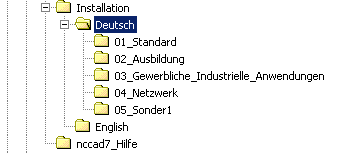
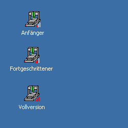
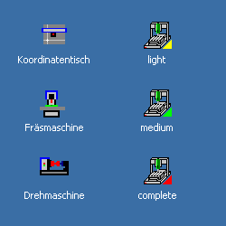
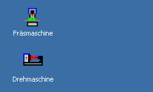

Hinweise
zur Installation von
nccad7
Stand:
02.2005
Dieses Dokument enthält
wichtige Informationen zur Installation und Nutzung von nccad7.
Bitte lesen Sie diese Hinweise
aufmerksam durch, bevor Sie loslegen.
nccad7
umfasst die gesamte Funktionalität für das Erstellen technischer Zeichnungen,
die Vergabe von technologischen Daten und die Steuerung kompatibler CNC-Maschinen.
Die Software erlaubt einen flexiblen Einsatz in weiten Bereichen gewerblicher
Nutzung, in Handwerk und Hobby sowie in der Aus- und Weiterbildung. Um den Anwender
in den verschiedenen Bereichen nicht zu überfordern, kann dier Funktionsumfang
angepasst bzw. reduziet werden. Wir stellen deshalb verschiedene Installationsmöglichkeiten
zur Verfügung, die im Folgenden erklärt werden:

1. Ordnerstruktur auf der CD
Für die Installation
ist der Ordner Installation ausschlaggebend.
Im Falle der deutschen Version erreichen Sie verschiedene Unter-Ordner, in denen
die Setup-Datei für die Installation steht. Nachdem das Setup ausgeführt
ist, stehen auf den Bildschirm verschiedene Start-Buttons für die unterschiedlichen
Anwendungen bzw. Funktionseinschränkungen zur Verfügung. Dazu der
folgende Überblick:
Start-Buttons |
Unter-Ordner,
Setup |
Beschreibung |
 |
01_Standard |
Installation
der Vollversion ohne Funktionseinschränkung.
Nach dem Setup steht
auf dem Bildchirm ein Start-Button für die Vollversion zur Verfügung. |
|  |
02_Ausbildung |
Aus-
und Weiterbildung mit pädagogisch-methodischer Ausrichtung.
Nach dem Setup stehen
auf dem Bildchirm verschiedene Start-Buttons für verschiedene
Niveaustufen zur Verfügung. |
|  |
03_Gewerbliche
_Industrielle
_Anwendungen |
Funktionsumfang
für verschiedene Anwendungen, verschiedene Niveaustufen und unterschiedliche
Maschinen.
Nach dem Setup stehen
auf dem Bildchirm verschiedene Start-Buttons für die verschiedenen
Niveaustufen- und Maschinen zur Verfügung. |
|
04_Netzwerk |
Installation im Netzwerk
mit Hilfe eines MSI-Paketes.
Nach der Ausführung
der Installationshilfe stehen auf dem Bildchirm verschiedene Start-Buttons
für verschiedene Niveaustufen zur Verfügung. |
|  |
05_Sonder1 |
Installation für
kundenspezifische Steuerungen.
Nach dem Setup stehen
auf dem Bildchirm verschiedene Start-Buttons für spezielle Kunden
zur Verfügung. |
| |
06_Sonder2 |
Erweiterungen
nach Bedarf
|
2.
Installation
Zum Installieren
ist Folgendes zu tun:
-
Einlegen der
CD.
-
Aufrufen des
Explorers, um die Ordner und die Setup-Dateien zu erreichen (siehe Bild
oben).
-
Auswahl der
Ordners nccad7.
-
Auswahl des
Ordners Deutsch.
-
Auswahl eines
Unter-Ordners entsprechend der obigen Tabelle.
-
In diesem Unter-Ordner
finden Sie eine Datei Setup_*****.exe
.
-
Starten der
Setup-Datei, der Installations-Vorgang läuft ab.
-
Auf dem Bildschirm
finden Sie ein- oder mehrere Start-Buttons entsprechend der obigen Tabelle.
Diese Start-Buttons können
Sie jederzeit verändern oder löschen. Gehen Sie dazu mit
dem Maus-Cursor auf einen Button und drücken die rechte Maustaste.
Sie erhalten ein entsprechendes PullDown-Menü.
Innerhalb der Hilfe/Hilfethemen
finden Sie zur Konfiguration und zur Wahl des Funktionsumfanges detailierte
Hinweise unter Bedienung/Konfigurierung
.